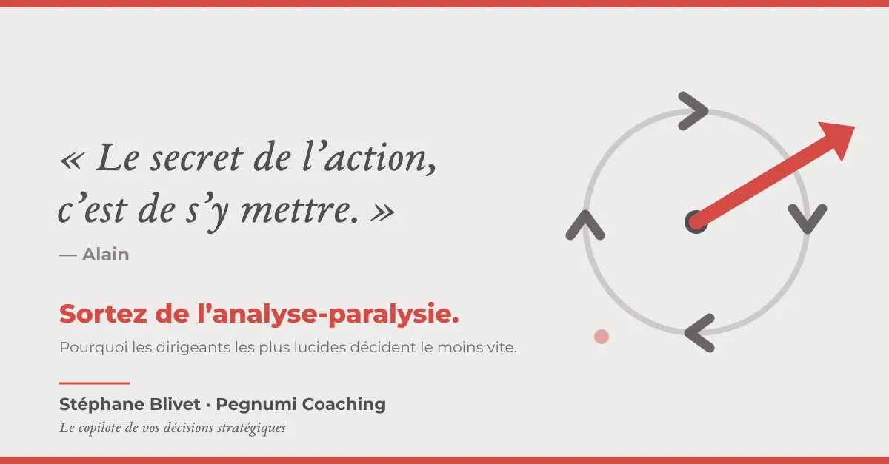
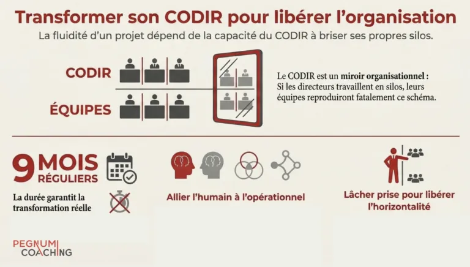
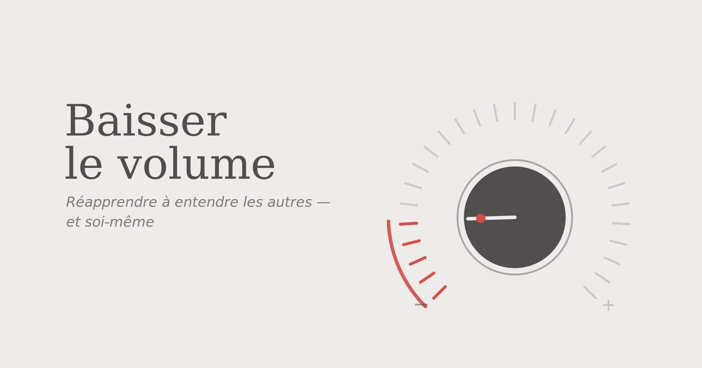

Vous reconnaissez l'une de ces situations
- Un CODIR bloquéLes échanges tournent en boucle, chacun garde sa vision, rien ne se tranche.
- Une décision qui s'enliseVous tournez autour depuis des semaines. Une décision qui n'avance pas coûte plus cher qu'un mauvais choix assumé.
- Une organisation qui décrocheLa transformation est annoncée, les équipes ne suivent pas. Les projets se succèdent, la pièce se rejoue à l'identique.
Ni consultant, ni coach classique, un copilote
Le consultant
Il vous apporte des réponses, souvent toutes faites, pensées ailleurs que dans votre entreprise.
Le coach classique
Il vous renvoie vos questions. Utile pour réfléchir, moins pour trancher.
Le copilote
Il s'assoit à côté de vous, dans le cockpit. Vous gardez les commandes. Je crée les conditions pour que les bonnes décisions soient prises, assumées et mises en œuvre, avec des résultats mesurables.
Une méthode en quatre temps
Cadrage et diagnostic
2 à 4 semainesEntretiens individuels, indicateurs, cartographie des options.
Livrable : synthèse des enjeuxClarification
4 à 8 semainesAteliers CODIR, impacts financiers, humains et opérationnels.
Livrable : scénarios comparésDécision et alignement
Le moment cléLa décision est prise, assumée, portée par l'équipe de direction.
Livrable : feuille de route partagéeMise en œuvre
Dans la duréeAccompagnement de l'exécution, ajustements, transfert de compétences.
Livrable : résultats mesurésMissions de 3 à 12 mois, en individuel (dirigeant, membre de CODIR) ou en collectif (équipe de direction, organisation).
Ce qu'en disent les dirigeants
« Stéphane a conçu et animé un séminaire qui nous a permis de mieux comprendre les contraintes de chacun, de dépasser certaines logiques de silo et de définir des actions immédiatement activables. »
« Stéphane a su créer un cadre à la fois exigeant et apaisé pour remettre tout le monde en mouvement. »
« Sa valeur ajoutée a été de transformer une situation potentiellement abstraite en chantiers réellement appropriés par les équipes. »
Réflexions de terrain

Analyse-paralysie du dirigeant : le secret, c'est de s'y mettre
Les dirigeants les plus lucides sont souvent les plus lents à décider.
Quand un CODIR tourne en rond sur une décision
Une paralysie qui n'a rien à voir avec le manque d'information.
Baisser le volume
Pour réapprendre à entendre les autres, et soi-même.45 minutes pour exposer votre situation
Un premier échange, sans engagement. Si mon approche ne répond pas à votre besoin, je vous le dis, et je vous oriente si je le peux.
Réserver un créneau